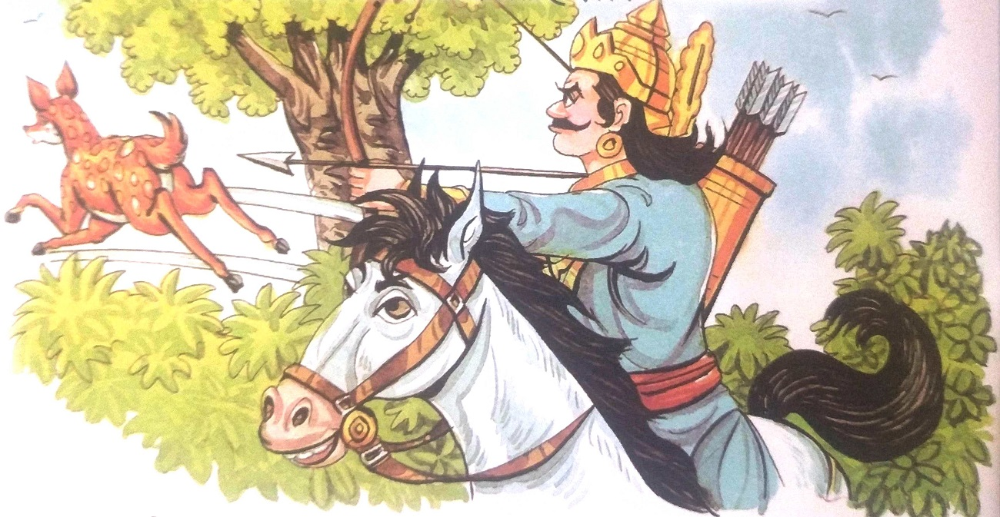
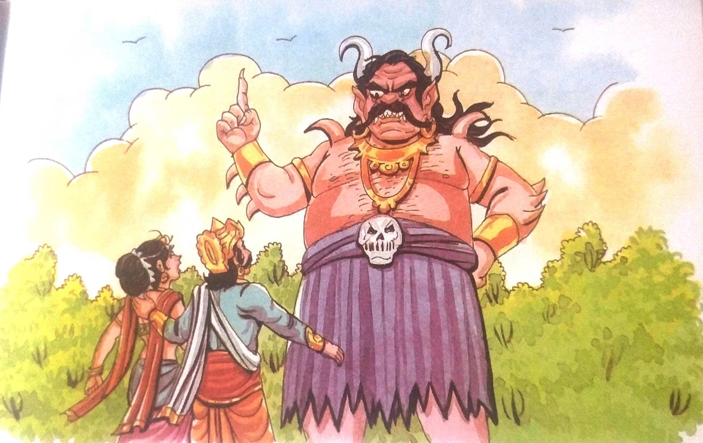
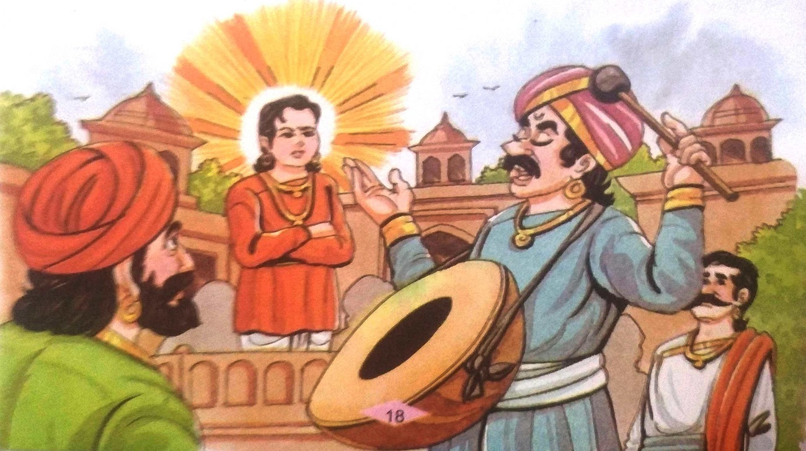
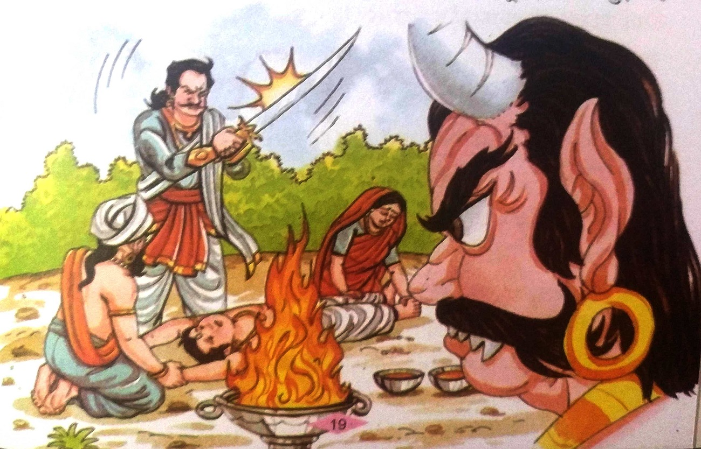
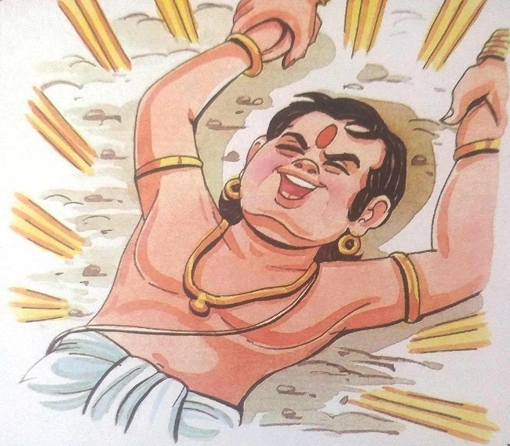

૮-છોકરો કેમ હસ્યો?

રાજા વિક્રમ ફરી એક વાર મૃતદેહ લાવવા ઝાડ પાસે ગયો. તેણે લાશને ઝાડ પરથી નીચે ઉતારી,
તેના ખભા પર મૂકી અને તેની મુસાફરી શરૂ કરી. વેતાલાએ ફરી એકવાર તેની વાર્તા શરૂ કરી-
ચિત્રકૂટના રાજાને શિકારનો ખૂબ શોખ હતો. એકવાર શિકાર કરતી વખતે તે જંગલમાં ઊંડે સુધી ગયો. જંગલમાં
ફરતી વખતે તે ખોવાઈ ગયો અને એકલો પડી ગયો.
આખો દિવસ ભટક્યા પછી તે થાકી ગયો અને એક ઝાડ નીચે આરામ કરવા બેસી ગયો. તે જ સમયે તેણે
એક સુંદર છોકરી જોઈ. તે એક ઋષિની પુત્રી હતી. રાજા તેના પ્રેમમાં પડ્યો. તે છોકરીને કંઈ બોલે તે
પહેલા ઋષિ પોતે રાજાની સામે આવીને ઊભા થઈ ગયા. ઋષિએ રાજાને પૂછ્યું, તમે અહીં કેવી રીતે આવ્યા?
રાજાએ જવાબ આપ્યો, "હે ઋષિવર. હું અહીં શિકાર કરવા આવ્યો છું." તેના પર નારાજગી વ્યક્ત
કરતાં ઋષિએ
કહ્યું, "હે રાજા! જંગલના આ નિર્દોષ જીવોને મારવાથી જે સુખ મળે છે તે માણસના અન્ય સુખોને ધીમે ધીમે
ખાઈ જાય છે.તે અમાનવીય કૃત્ય છે." પછી રાજાએ વચન આપ્યું કે "તે ફરી ક્યારેય કોઈની હત્યા નહીં
કરે"."ઋષિ રાજાથી ખૂબ જ ખુશ થયા અને બોલ્યા, “હે રાજા, હું તમારાથી ખુશ છું.તને જે ગમે તે મારી
પાસેથી માંગી લે.” રાજાએ અત્યંત નમ્રતાથી કહ્યું, “હા, ઋષિવર. હું તમારી દીકરી સાથે લગ્ન કરવા માંગુ
છું."ઋષિ ખૂબ જ ખુશ થયા અને તેમની પુત્રીની સંમતિ મેળવીને તેણે તેના લગ્ન રાજા સાથે કરી દીધા.

થોડા દિવસો સુધી જંગલમાં રહ્યા પછી, રાજા અને તેની કન્યાએ ઋષિને વિદાય આપી અને જંગલ
છોડી દીધું.
રસ્તામાં તેને એક ભયંકર રાક્ષસ મળ્યો. તેણે કહ્યું, "આ રાજા. હું તમારી સુંદર પત્નીને ખાઈશ. જો
તમારે તેનો જીવ બચાવવો હોય તો તમારે સાત દિવસમાં એક બ્રાહ્મણ બાળકનો બલિદાન આપવો પડશે. આ માટે તેણે
સ્વેચ્છાએ અને બલિદાન સમયે તૈયાર રહેવું જોઈએ. તેના હાથ અને પગ તેના માતાપિતાએ પકડવા જોઈએ." રાજાની
પત્નીએ આ અમાનવીય શરત સ્વીકારવાની ના પાડી. પરંતુ રાજાને તેની પત્ની ગુમાવવાનો એટલો ડર હતો કે તે
રાક્ષસની શરતો માટે સંમત થઈ ગયો.
તેના રાજ્યમાં પાછા ફર્યા પછી તેણે તરત જ તેના મુખ્ય સલાહકારને બોલાવ્યો અને તેને
દૈત્યની સ્થિતિ
વિશે જાણ કરી. બધું સાંભળ્યા પછી, સલાહકારે કહ્યું, "હે રાજા. હું ટૂંક સમયમાં તમારી સમસ્યાનો ઉકેલ
શોધીશ. તમે સંપૂર્ણપણે આરામ કરી શકો છો."
આ પછી સલાહકારે એક કલાકારને સાત વર્ષના છોકરાની સુવર્ણ પ્રતિમા બનાવવાનો આદેશ આપ્યો.
મૂર્તિ બનાવ્યા
પછી, તેને રાજ્યના વિવિધ સ્થળોએ લઈ જવામાં આવી હતી અને જાહેરાત કરવામાં આવી હતી કે "જો કોઈ સાત
વર્ષનો બ્રાહ્મણ બાળક સ્વેચ્છાએ બલિદાન આપશે અને તેના માતા-પિતા બલિદાન સમયે તેના હાથ-પગ પકડશે તો
તેના પરિવારને મળશે. આ સુવર્ણ પ્રતિમા અને સો ગામો."

મોટા ભાગના લોકો આવી જાહેરાત સાંભળીને અત્યંત દુઃખી થયા હતા. તેઓએ એકબીજા સાથે વાત કરી
તેની નિંદા
કરી અને તેને સંપૂર્ણપણે અમાનવીય ગણાવ્યું. આ જાહેરાત સાંભળીને એક બ્રાહ્મણ છોકરો આ માટે તૈયાર થઈ
ગયો. તેણે તેના માતા-પિતાને કહ્યું, "તમને ઘણા પુત્રો પ્રાપ્ત થશે, પરંતુ મારા બલિદાનથી રાજાને તો
લાભ થશે જ, પરંતુ તેના પરિવારની અત્યંત ગરીબી પણ દૂર થશે."
છોકરાના માતા-પિતા તેમના પુત્રનું બલિદાન આપવા માટે તૈયાર નહોતા, પરંતુ છોકરાએ તેમને
કોઈક રીતે
સમજાવ્યા અને તેમને આ માટે સંમત કર્યા.

તે પછી છોકરો તેના માતા-પિતા સાથે રાજા પાસે પહોંચ્યો. તેમને સાથે લઈને રાજા રાક્ષસ
પાસે ગયા.
બ્રાહ્મણ છોકરાને તેના માતા-પિતા સાથે જોઈને રાક્ષસ ખૂબ જ ખુશ થયો. બલિદાનની પ્રક્રિયા શરૂ થઈ. ગરીબ
બ્રાહ્મણ માતા-પિતાએ છોકરાના હાથ-પગ પકડી લીધા અને રાજાએ તલવાર ઉપાડી.
આ દ્રશ્ય જોઈને રાક્ષસ આનંદથી નાચવા લાગ્યો.
|

|
તે જ સમયે છોકરો જોર જોરથી હસવા લાગ્યો.
વેતાલાએ તેની વાર્તા અહીં જ બંધ કરી અને રાજા વિક્રમને પૂછ્યું, "હવે
મને કહો કેમ છોકરો હસ્યો." તે
રાજા વિક્રમે એક ક્ષણ માટે વિચાર કર્યો અને પછી જવાબ આપ્યો, “વેતાલા, જ્યારે પણ
બાળક મુશ્કેલીમાં
આવે છે ત્યારે તે સામાન્ય રીતે તેના માતાપિતા તરફ વળે છે અને પછી રાજા પાસે મદદ
માંગવા જાય છે.
પરંતુ જો રાજા પણ ન મળે તો તેને મદદ કરવા માટે
ભગવાનને યાદ કરે છે. પરંતુ અહીં તેને મદદ કરવા માટે કોઈ ન હતું. તેના માતા-પિતાએ
તેના હાથ અને પગ
પકડી રાખ્યા હતા અને રાજા તેને બલિદાન આપવા માટે તલવાર સાથે તૈયાર હતા.
આ વક્રોક્તિ પર તે પોતે જ હસી રહ્યો હતો. તે જ સમયે, તે એ હકીકત પર હસી
રહ્યો હતો કે તે જેની મદદ
કરવા માંગતો હતો તેની મદદ કરવા માટે તે પોતાનું બલિદાન આપી રહ્યો હતો."
|
બેતાલે કહ્યું, "વિક્રમ! તારો જવાબ તો પણ તારા બોલવાના કારણે હું તને પાછળ છોડીને ઝાડ
પરના મારા ઘરે
પાછો જાઉં છું." આટલું કહીને તેણે વિક્રમના શરીર પર એક
તમાચો માર્યો અને વડના ઝાડ પર ઊડીને ઊંધો લટકી ગયો.
તે વિક્રમના પાછા ફરવાની રાહ જોવા લાગ્યો. વિક્રમે પણ ધીરજ ન ગુમાવી. તેણે ફરીથી તેના હાથમાં ચમકતી
તલવાર પકડી અને ફરી એકવાર તેનું વચન પૂરું કરવા તે ઘોર અંધકારમાં ઝાડ તરફ પાછા ચાલવા માંડ્યું.
|